01 / 04 — Game DevelopmentBuilt in Unreal Engine 5
Third-Person Horror Game
In development
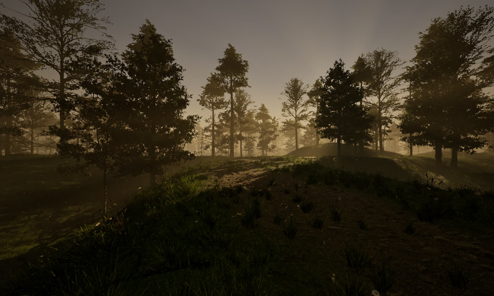
Environment
Third-person walk through the forest at dusk.
Interaction
Approaching and entering the log cabin.
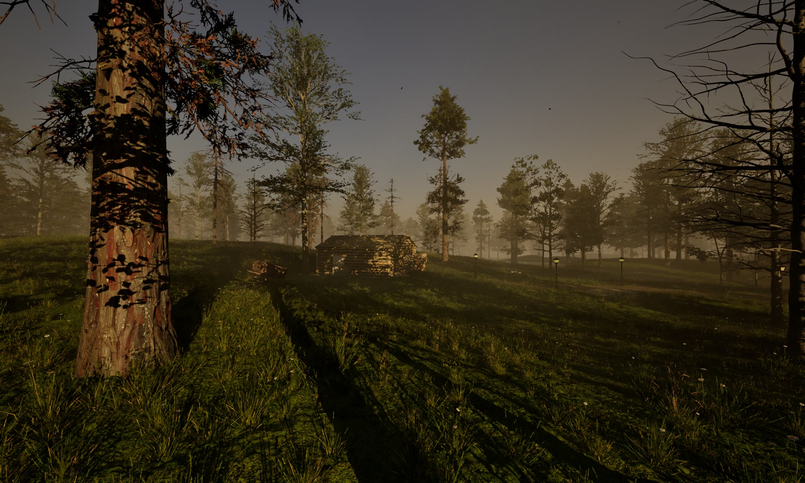
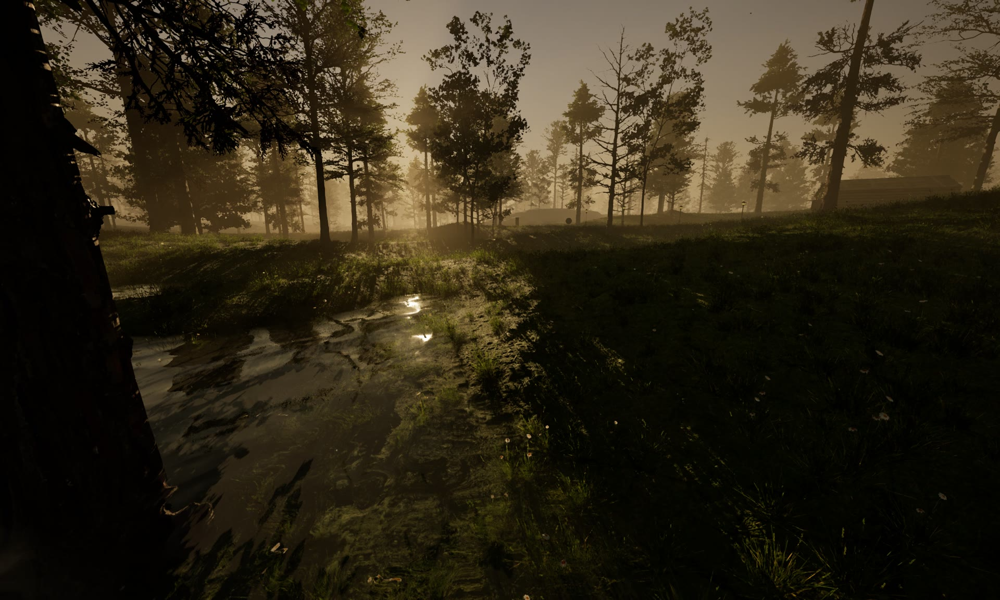
In development
Pause menu
Still in development — the design and settings aren't finished yet.

How the world is built
landscape sculpting, nanite foliage, PCG graphs, world partition streaming, and the MetaHuman character.
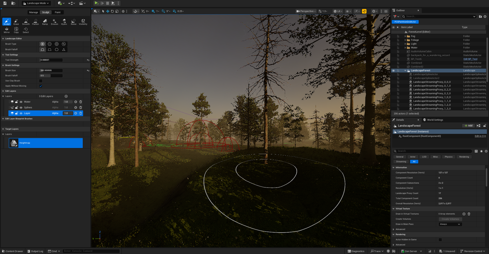
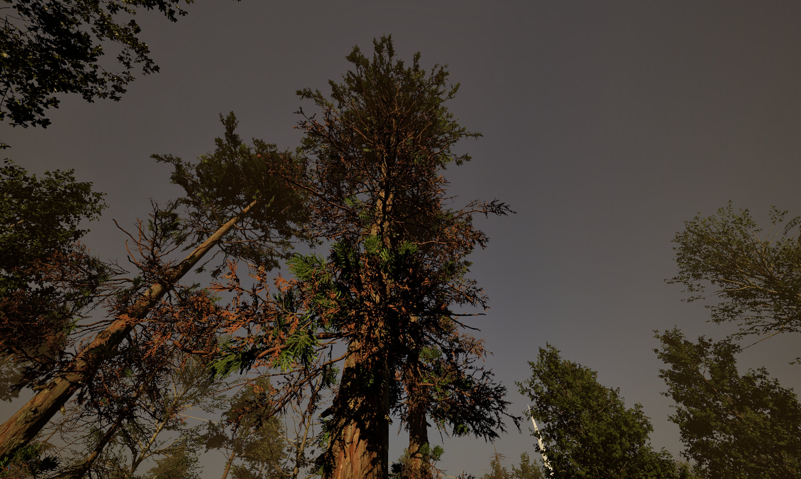
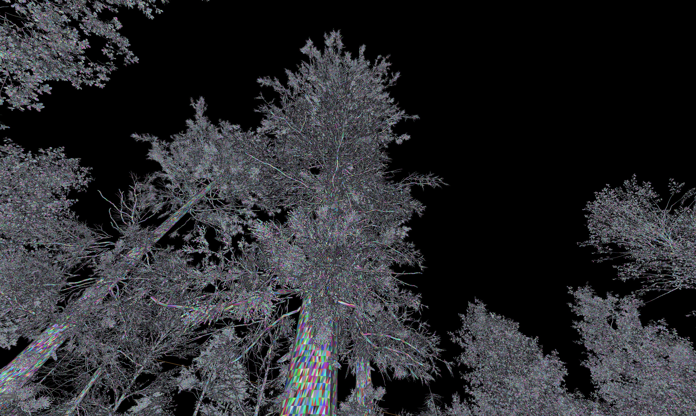
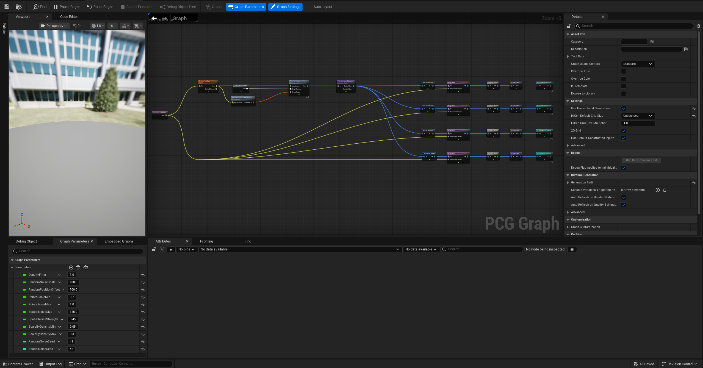
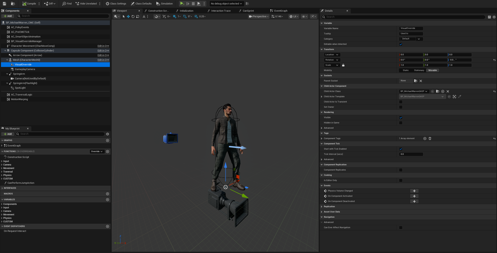
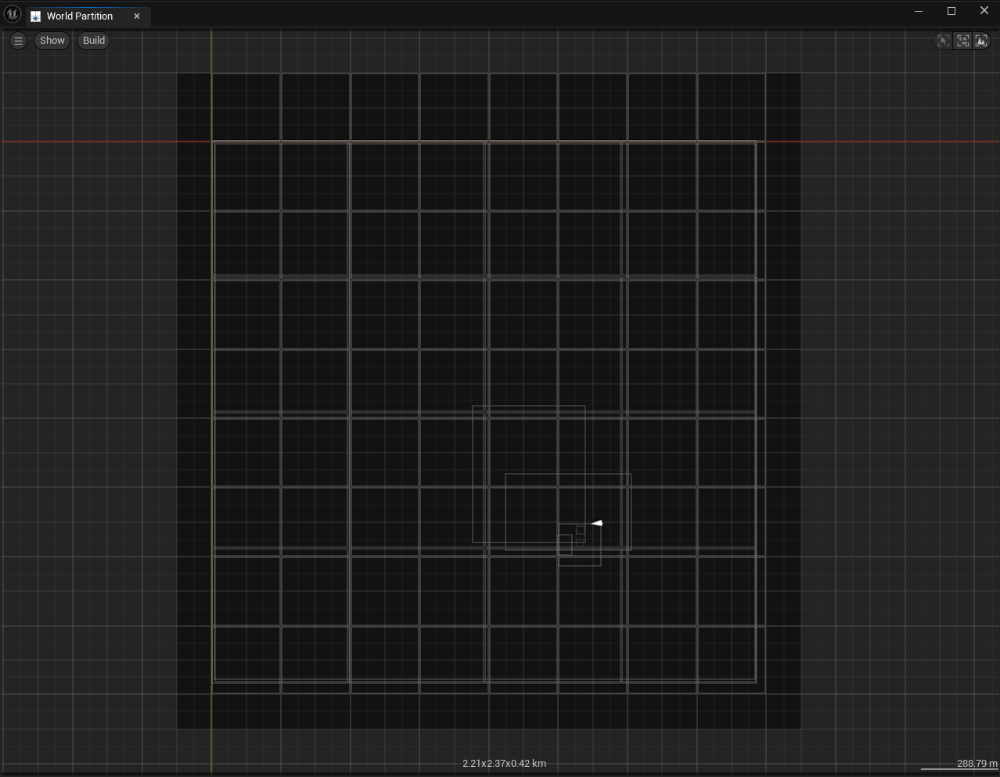
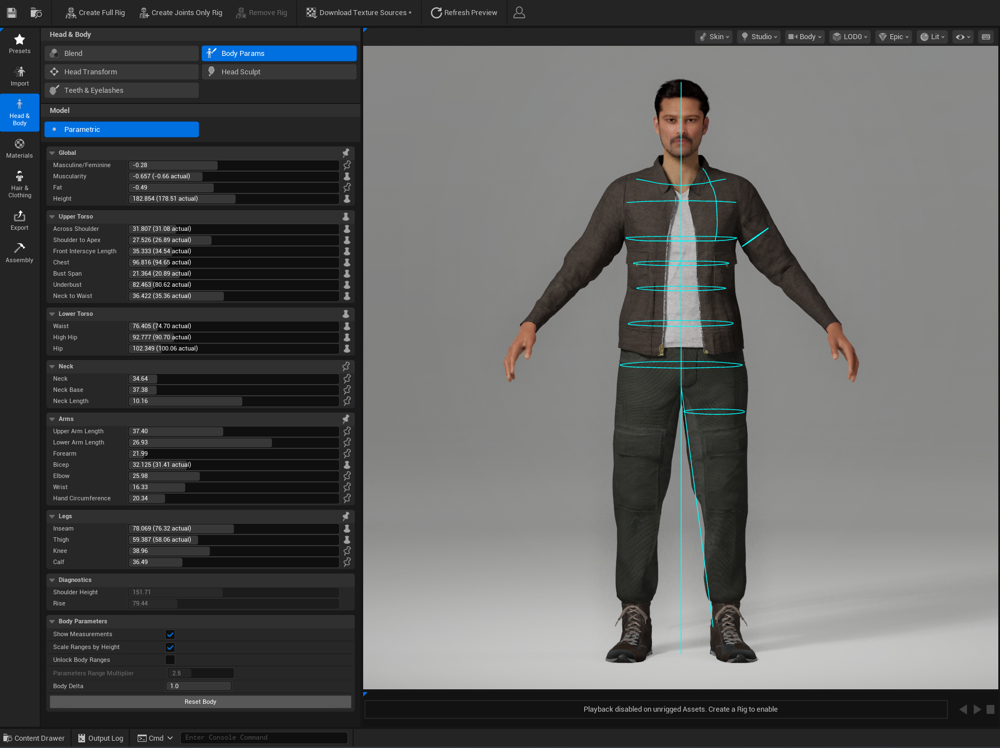
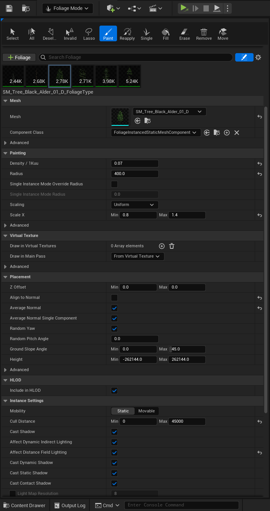
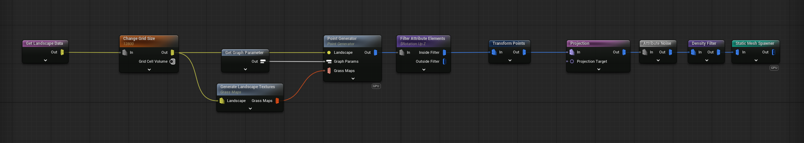
Performance
Developed and tested on a laptop with a Ryzen 7 7840HS, RTX 4060 8GB and 16GB RAM.
Frame rates and performance numbers will be added here soon.
and much more.